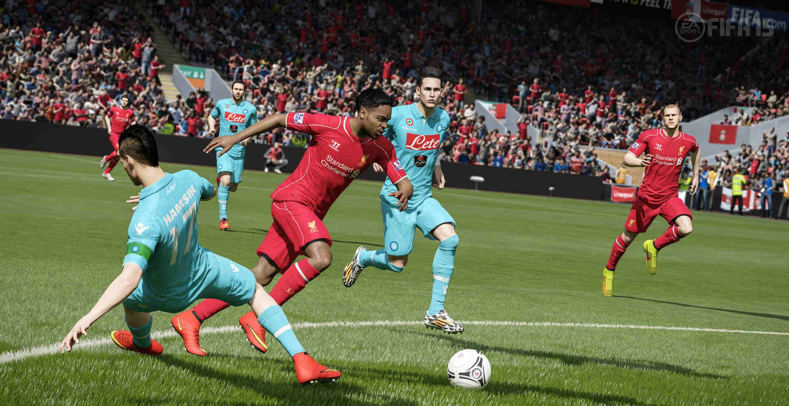
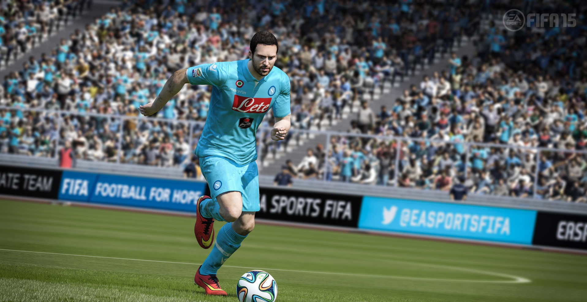
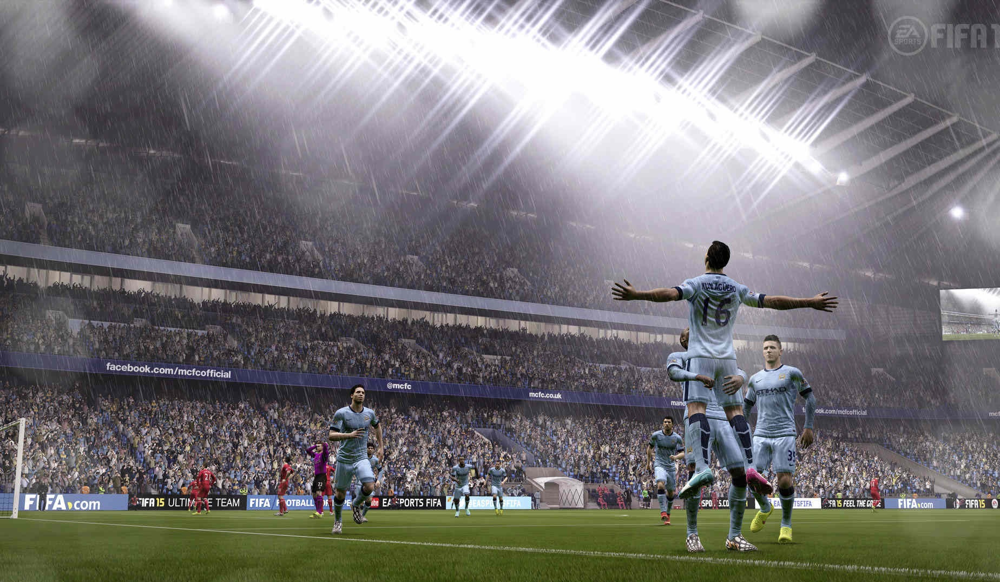

FIFA 15
FIFA 15 is an association football simulation video game developed by EA Canada and published by Electronic Arts. It was released on 23 September 2014 in North America, 25 September in Europe and 26 September in the United Kingdom and Ireland for the PlayStation 3, PlayStation 4, PlayStation Vita, Nintendo 3DS, Wii, Xbox One, Xbox 360, Microsoft Windows, iOS, Android and Windows Phone.On PC, FIFA 15 runs on EA’s Ignite engine with the same features as the PS4 and Xbox One editions.Fueled by EA SPORTS IGNITE, in FIFA 15 players will show emotion based on the context of the match. With over 600 new emotional reactions, players now respond to pivotal moments on the pitch - bad tackles, missed chances, epic goals - as they would in real life. Match Day is dynamic and immersive. Improved commentary will highlight unique fan reactions, while chants and behaviours will be relevant to your club. New bench reactions, side line character animations, 10-man goal celebrations, and more will keep you engaged in the story of the match.

This year's Ultimate Team features a new feature, in which users can sign loan players for a limited duration of matches. Another new feature is The Concept Squad, where players have an access to the game's database and can create a "dream squad". The concept player's card is grey colored. A number of new legends are also introduced to the game, including Franz Beckenbauer, Roberto Carlos, Peter Schmeichel and Hristo Stoichkov.
Penetrating that defensive barrier can be quite a challenge at times, not least because opponents seem more ready than ever to put their bodies on the line. Blocked shots are a common occurrence, and even nippy forwards and wingers like Sturridge, Robben and Navas will struggle to accelerate clear of the last man, as lumbering defenders suddenly find a superhuman burst of speed to catch up with players they shouldn’t be able to get near. I get some joy by running into the channels and cutting inside, or back onto your other foot, particularly with flair players: long, mazy dribbles are now easier than ever, and players with low centres of gravity will skip over the outstretched boots of their markers, retaining the ball even as their shirts are being tugged.
When the series began in late 1993, it was notable for being the first to have an official licence from FIFA, the world governing body of football. The latest installments in the series contain many exclusively-licensed leagues including leagues and teams from around the world, including the German Bundesliga and 2. Bundesliga, English Premier League and Football League, Italian Serie A, Spanish La Liga, Portuguese Primeira Liga, French Ligue 1, Dutch Eredivisie, Brazilian Campeonato Brasileiro Série A, Mexican Liga MX, American Major League Soccer, South Korean K-League and Australian A-League, allowing the use of real leagues, clubs, and player names and likenesses within the games. In addition, internationally popular clubs from around the world, including some teams from Greece, Turkey, Argentina and South Africa, without those nations' entire leagues.
Lionel Messi returns as the main cover star for all regions on the global cover. Messi has starred on the cover of all installments of the FIFA franchise since FIFA 13, when he replaced Wayne Rooney. This is the first title in the series to have localised covers in all regions for Nintendo's platforms, which previously only had localised covers in select countries on said platforms. Some regions also have a player from their region or a player playing in one of that region's leagues starring on the cover with Messi.